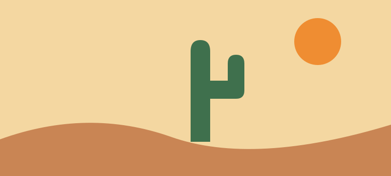

Observe from a distance
Use binoculars or a zoom lens so wildlife does not need to change its behavior.
Plan an observationA compact field guide to observing desert life with care.
Look for shade, water, shelter, and seasonal change before focusing on a single species.

Use binoculars or a zoom lens so wildlife does not need to change its behavior.
Plan an observationNote time, temperature, cloud cover, recent rain, and the habitat around the observation.
See the note templateRemain on durable surfaces and take photographs rather than natural objects.
Review field ethics